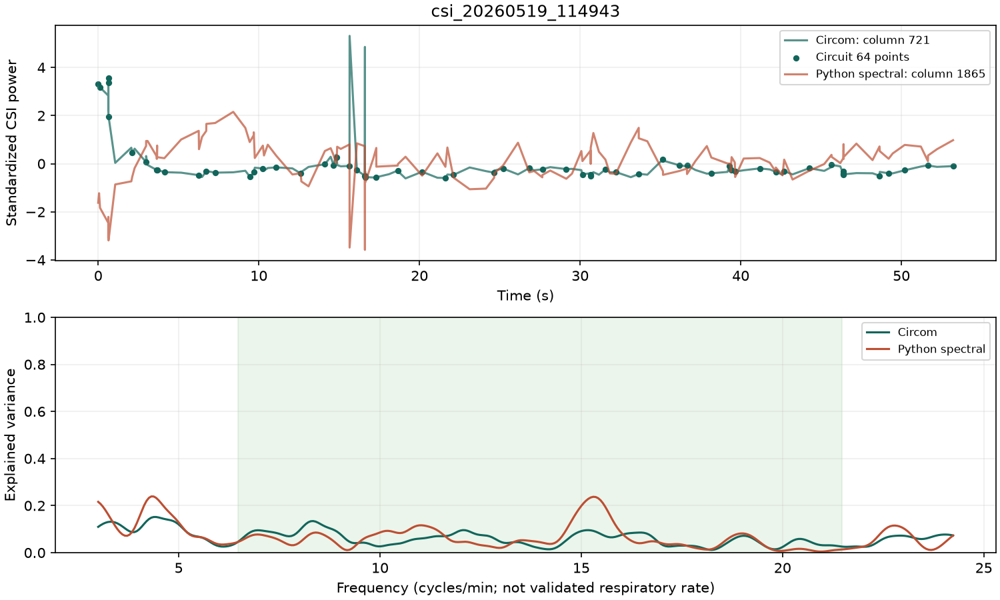
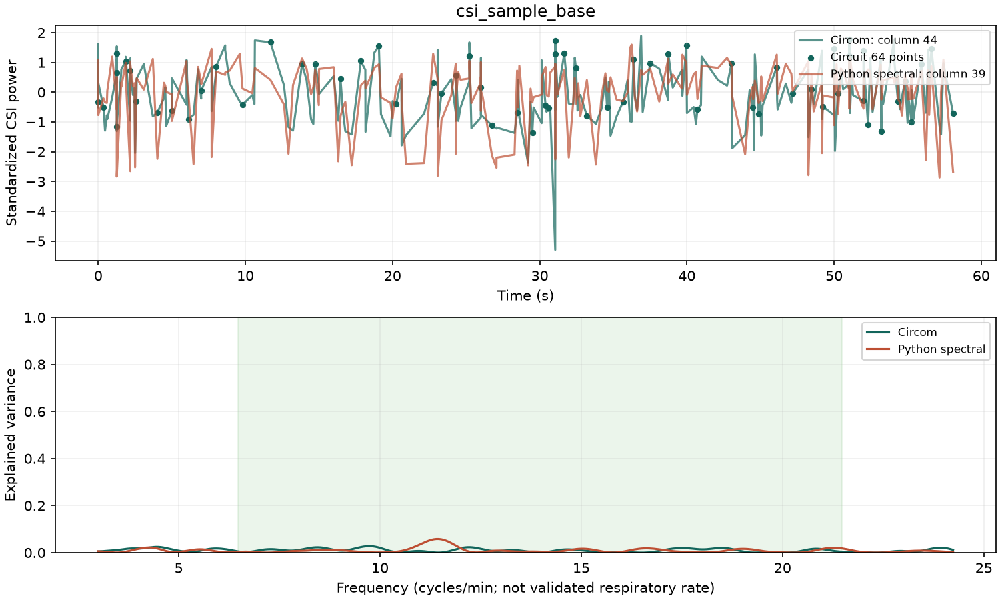
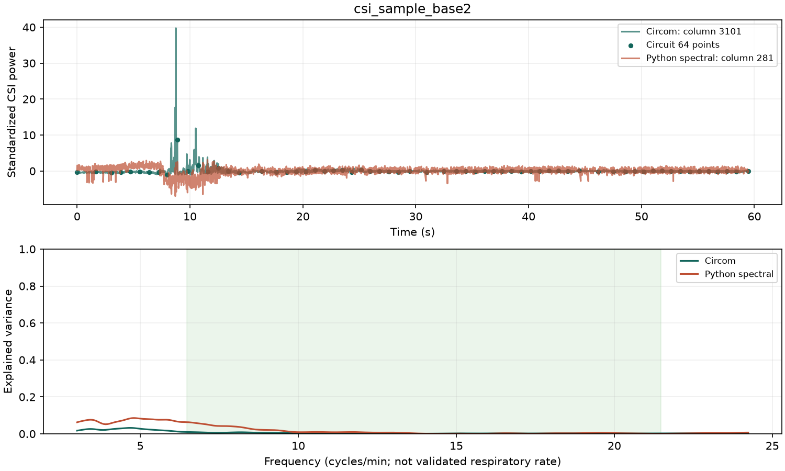
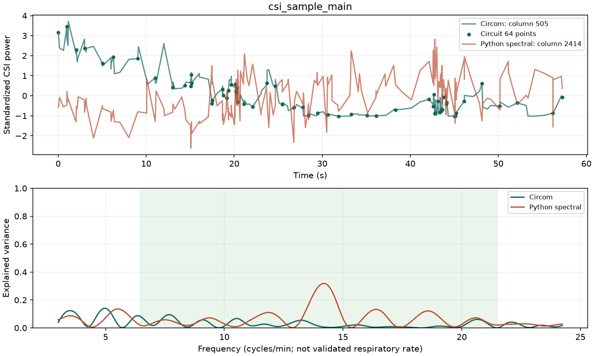
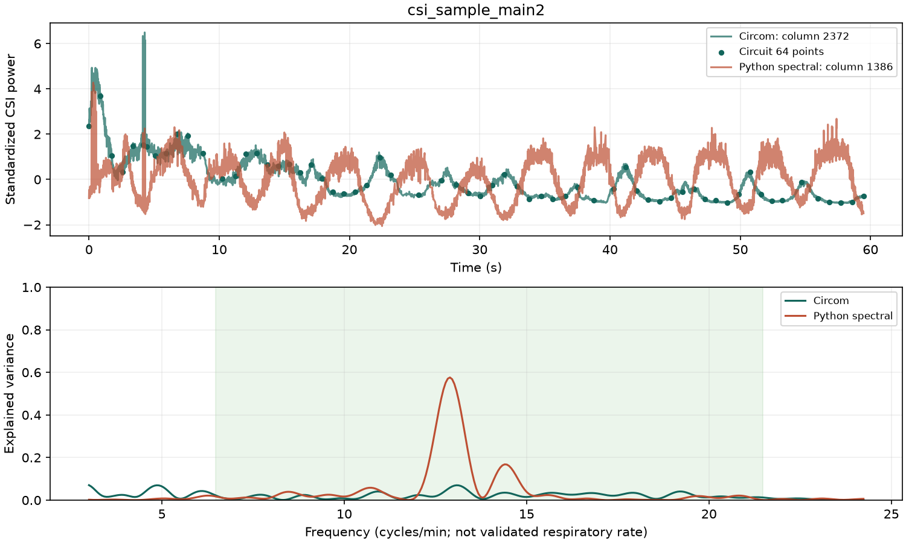

CSI / 評価用レポート
実回路の WASM を実行。実データの正解ラベルは未提供のため、表は精度ではなく選択の一致を示します。番号は 0 始まりの CSI 列です。
| CSI | Circom | Python 同式・整数64 | 同式・実数64 | 同式・実数全点 | 周期性・整数64 | 周期性・全点 |
|---|---|---|---|---|---|---|
| csi_20260519_114943 | 721 | 721 | 721 | 723 | 593 | 1865 |
| csi_sample_base | 44 | 44 | 44 | 30 | 28 | 39 |
| csi_sample_base2 | 3101 | 3101 | 3101 | 3037 | 2292 | 281 |
| csi_sample_main | 505 | 505 | 505 | 506 | 1677 | 2414 |
| csi_sample_main2 | 2372 | 2372 | 2372 | 2376 | 1364 | 1386 |
| rx_2_260416_194935 | Excluded: adaptive_candidate_capacity_exceeded | |||||
| rx_2_260416_195009 | Excluded: PicoScenesフレーム長が不正です: offset=293586524, size=32865 | |||||
周期性基準: 回路の正常帯域に対応する約 0.107–0.358 Hz で、定数項付き Lomb–Scargle の説明分散率が最大の列。呼吸由来であることは保証しません。
| 条件 | Circom | Python 同式・整数64 | 周期性・整数64 | 周期性・全点 |
|---|---|---|---|---|
| clean | 0 / 4 | 0 / 4 | 4 / 4 | 4 / 4 |
| slow_drift | 0 / 4 | 0 / 4 | 4 / 4 | 4 / 4 |
| in_band_interference | 0 / 4 | 0 / 4 | 0 / 4 | 0 / 4 |
clean / slow_drift / in_band_interference 各4件。合成の成功率は実測の呼吸判定精度ではありません。既存の本番選択回路・WebUIは変更していません。





詳細: results.json / 評価手順・制約